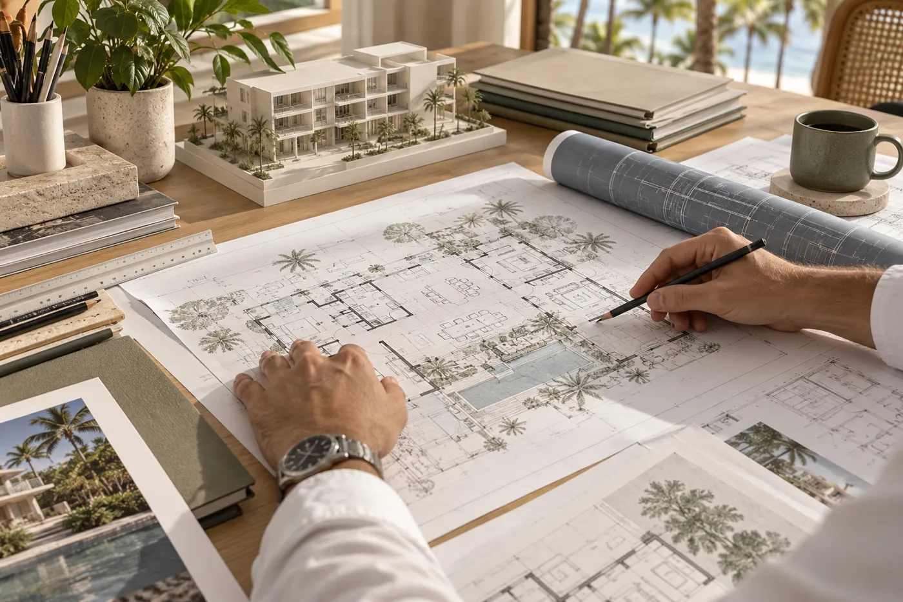

Arquitectura · Asesoría · Construcción
Tu proyecto,
con una dirección clara.
Construcción y acompañamiento en la legalización de proyectos desde Bávaro–Punta Cana para todo el país.
Bávaro / Punta Cana / Verón / zonas cercanas

Una forma de abordar cada proyecto
De la idea a una decisión bien fundamentada.
Cada proyecto comienza con una situación distinta: una idea que necesita tomar forma, una construcción por ejecutar, un permiso que gestionar o una propiedad cuya situación necesita ser revisada.
El trabajo comienza por comprender el punto de partida, definir con claridad lo que se necesita y establecer el proceso adecuado para avanzar.
¿En qué podemos ayudarle?
03 / Regularización
¿Tu construcción necesita una revisión?
El primer paso es conocer la situación del inmueble y la documentación disponible. Una evaluación preliminar permite identificar qué aspectos requieren atención.
Conocer el proceso ↗Proyectos
Cada proyecto tiene una historia.
El portafolio está en preparación. Incorporaremos información y fotografías de los proyectos cuando el material esté autorizado.
Ver proyectosEl estudio
Carlos Alvarado Melo
Comprender sus necesidades, definir el alcance del trabajo y mantener una comunicación clara en cada etapa.
Conocer el estudioRecursos
Información útil para avanzar con mayor claridad.
Guías, requisitos y documentación de referencia sobre proyectos, permisos y regularización.
Explorar recursosContacto
Hablemos de su proyecto.
Cuéntenos cuál es su punto de partida y qué desea lograr.
Iniciar una conversación